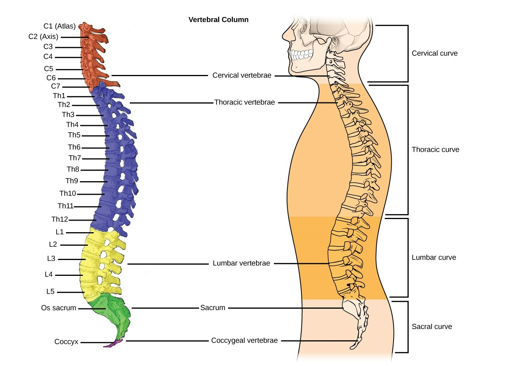

So...how does it work?
On this page:
What is scoliosis?
Vertebrae
In vitae lectus dolor. Vivamus rhoncus felis non tempus aliquet. Cras blandit lectus id ex posuere pretium. Donec quis lectus viverra, elementum tellus dictum, fringilla ante. Sed aliquet, risus at gravida accumsan, turpis purus volutpat quam, et faucibus mi velit vitae magna.
Muscles
In vitae lectus dolor. Vivamus rhoncus felis non tempus aliquet. Cras blandit lectus id ex posuere pretium. Donec quis lectus viverra, elementum tellus dictum, fringilla ante. Sed aliquet, risus at gravida accumsan, turpis purus volutpat quam, et faucibus mi velit vitae magna. Nulla quis libero et dolor facilisis condimentum.
Legs
In vitae lectus dolor. Vivamus rhoncus felis non tempus aliquet. Cras blandit lectus id ex posuere pretium. Donec quis lectus viverra, elementum tellus dictum, fringilla ante.
Pelvis
In vitae lectus dolor. Vivamus rhoncus felis non tempus aliquet. Cras blandit lectus id ex posuere pretium.
Types and their features
Taking into account all of the above, we can focus on types: specific ways of how vertebrae can deviate from the most producktive "healthy" way of their placement.
The most often medical types are these four:
Why does it appear?
In vitae lectus dolor. Vivamus rhoncus felis non tempus aliquet. Cras blandit lectus id ex posuere pretium. Donec quis lectus viverra, elementum tellus dictum, fringilla ante. Sed aliquet, risus at gravida accumsan, turpis purus volutpat quam, et faucibus mi velit vitae magna. Nulla quis libero et dolor facilisis condimentum.
Prognosis: what's next?
In vitae lectus dolor. Vivamus rhoncus felis non tempus aliquet. Cras blandit lectus id ex posuere pretium. Donec quis lectus viverra, elementum tellus dictum, fringilla ante. Sed aliquet, risus at gravida accumsan, turpis purus volutpat quam, et faucibus mi velit vitae magna. Nulla quis libero et dolor facilisis condimentum.